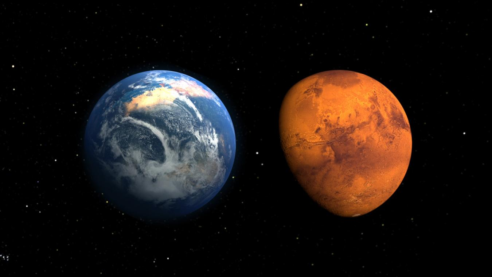

Mars
Une magnifique planète.

Position de Mars
Mars est la quatrième planète la plus proche du Soleil.
Une magnifique planète.
Mars est la quatrième planète la plus proche du Soleil.
Mars se trouve a environ 227 939 200 km du Soleil.
Mars est la quatrième planète par ordre croissant de la distance au Soleil et la deuxième par ordre croissant de la taille et de la masse. Son éloignement au Soleil est compris entre 1,381 et 1,666 UA (206,6 à 249,2 millions de kilomètres), avec une période orbitale de 669,58 jours martiens (686,71 jours ou 1,88 année terrestre).
C’est une planète tellurique, comme le sont Mercure, Vénus et la Terre, environ dix fois moins massive que la Terre mais dix fois plus massive que la Lune. Sa topographie présente des analogies aussi bien avec la Lune, à travers ses cratères et ses bassins d'impact, qu'avec la Terre, avec des formations d'origine tectonique et climatique telles que des volcans, des rifts, des vallées, des mesas, des champs de dunes et des calottes polaires. Le plus haut volcan du Système solaire, Olympus Mons (qui est un volcan bouclier), et le plus grand canyon, Valles Marineris, se trouvent sur Mars.
Mars a aujourd'hui perdu la presque totalité de son activité géologique interne, et seuls des événements mineurs surviendraient encore épisodiquement à sa surface, tels que des glissements de terrain, sans doute des geysers de CO2 dans les régions polaires, peut-être des séismes, voire de rares éruptions volcaniques sous forme de petites coulées de lave.
La période de rotation de Mars est du même ordre que celle de la Terre et son obliquité lui confère un cycle des saisons similaire à celui que nous connaissons ; ces saisons sont toutefois marquées par une excentricité orbitale cinq fois et demie plus élevée que celle de la Terre, d'où une asymétrie saisonnière sensiblement plus prononcée entre les deux hémisphères.
Mars peut être observée à l’œil nu, avec un éclat bien plus faible que celui de Vénus mais qui peut, lors d'oppositions rapprochées, dépasser l'éclat maximum de Jupiter, atteignant une magnitude apparente de -2,914, tandis que son diamètre apparent varie de 25,1 à 3,5 secondes d'arc selon que sa distance à la Terre varie de 55,7 à 401,3 millions de kilomètres. Mars a toujours été caractérisée visuellement par sa couleur rouge, due à l'abondance de l'hématite amorphe — oxyde de fer(III) — à sa surface. C'est ce qui l'a fait associer à la guerre depuis l'Antiquité, d'où son nom en Occident d'après le dieu Mars de la guerre dans la mythologie romaine, assimilé au dieu Arès de la mythologie grecque. En français, Mars est souvent surnommée « la planète rouge » en raison de cette couleur particulière.
Avant le survol de Mars par Mariner 4 en 1965, on pensait qu'il s'y trouvait de l'eau liquide en surface et que des formes de vie similaires à celles existant sur Terre pouvaient s'y être développées, thème très fécond en science-fiction. Les variations saisonnières d'albédo à la surface de la planète étaient attribuées à de la végétation, tandis que des formations rectilignes perçues dans les lunettes astronomiques et les télescopes de l'époque étaient interprétées, notamment par l'astronome amateur américain Percival Lowell, comme des canaux d'irrigation traversant des étendues désertiques avec de l'eau issue des calottes polaires. Toutes ces spéculations ont été balayées par les sondes spatiales qui ont étudié Mars : dès 1965, Mariner 4 permit de découvrir une planète dépourvue de champ magnétique global, avec une surface cratérisée rappelant celle de la Lune, et une atmosphère ténue.
Depuis lors, Mars fait l'objet de programmes d'exploration plus ambitieux que pour tout autre objet du Système solaire : de tous les astres que nous connaissons, c'est en effet celui qui présente l'environnement ayant le plus de similitudes avec celui de notre planète. Cette exploration intensive nous a apporté une bien meilleure compréhension de l'histoire géologique martienne, révélant notamment l'existence d'une époque reculée — le Noachien — où les conditions en surface devaient être assez similaires à celles de la Terre à la même époque, avec la présence de grandes quantités d'eau liquide ; la sonde Phoenix a ainsi découvert à l'été 2008 de la glace d'eau à une faible profondeur dans le sol de Vastitas Borealis5.
Mars possède deux petits satellites naturels, Phobos et Déimos.